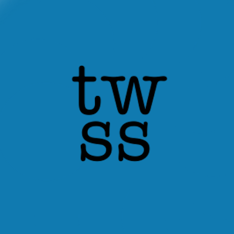
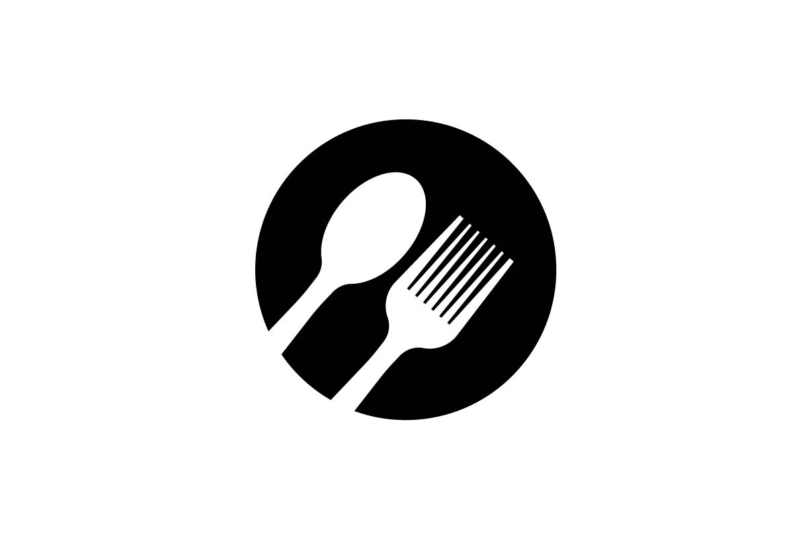
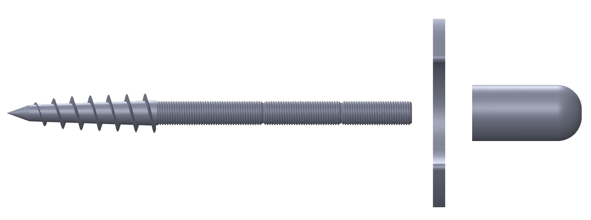

Projets d’ingénierie
Développement d’applications et produits entre conception numérique et technique.

That's What She Said
Application android permettant de de détecter automatiquement les phrases ambigües à l’aide d’un modèle IA. Développement Android et IA.

Restonome
Application à destination de restaurants permettant de gérer l'ensemble de leurs recettes, d’organiser les menus, et de calculer automatiquement les prix en fonction du coût des ingrédients et d'une marge définie.

Pente-à-vis
Développement et production d'un produit réglable qui aide à couler une dalle béton en pente dans des conditions professionnelles
Intéressé aussi par mes projets d’architecture ?
Voir les projets d’architecture